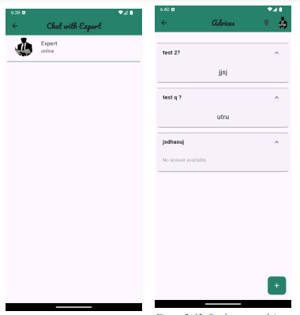
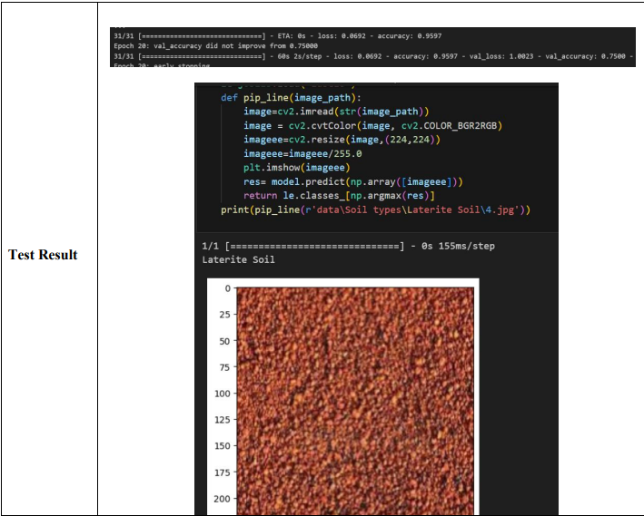
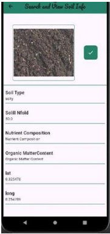

here is my Graduation Project
My graduation project is a fully functional mobile application that integrates real-time chat features and a Convolutional Neural Network (CNN) algorithm achieving 95% accuracy. Below are key highlights demonstrating the app in action, its chat system, and the AI model’s performance
The app includes a real-time chat system that enables users to communicate instantly and securely
 The project uses a custom Convolutional Neural Network (CNN) model that analyzes data with an accuracy of 95%. This demonstrates my practical experience in applying AI algorithms, training models, and integrating them into a real-world mobile app.